Compound
Text Encoding
Version 1.1.xf86.1 XFree86 4.0.2 XFree86, Inc.
based on
Version 1.1 X Consortium Standard X Version 11, Release 6.4
Robert W. Scheifler
Copyright © 1989 by X Consortium
Permission is hereby granted, free of charge, to any person obtaining a copy of this software and associated documentation files (the ‘‘Software’’), to deal in the Software without restriction, including without limitation the rights to use, copy, modify, merge, publish, distribute, sublicense, and/or sell copies of the Software, and to permit persons to whom the Software is furnished to do so, subject to the following conditions:
The above copyright notice and this permission notice shall be included in all copies or substantial portions of the Software.
THE SOFTWARE IS PROVIDED ‘‘AS IS’’, WITHOUT WARRANTY OF ANY KIND, EXPRESS OR IMPLIED, INCLUDING BUT NOT LIMITED TO THE WARRANTIES OF MERCHANTABILITY, FITNESS FOR A PARTICULAR PURPOSE AND NONINFRINGEMENT. IN NO EVENT SHALL THE X CONSORTIUM BE LIABLE FOR ANY CLAIM, DAMAGES OR OTHER LIABILITY, WHETHER IN AN ACTION OF CONTRACT, TORT OR OTHERWISE, ARISING FROM, OUT OF OR IN CONNECTION WITH THE SOFTWARE OR THE USE OR OTHER DEALINGS IN THE SOFTWARE.
Except as contained in this notice, the name of the X Consortium shall not be used in advertising or otherwise to promote the sale, use or other dealings in this Software without prior written authorization from the X Consortium.
Compound Text is a format for multiple character set data, such as multi-lingual text. The format is based on ISO standards for encoding and combining character sets. Compound Text is intended to be used in three main contexts: inter-client communication using selections, as defined in the Inter-Client Communication Conventions Manual (ICCCM); window properties (e.g., window manager hints as defined in the ICCCM); and resources (e.g., as defined in Xlib and the Xt Intrinsics).
Compound Text is intended as an external representation, or interchange format, not as an internal representation. It is expected (but not required) that clients will convert Compound Text to some internal representation for processing and rendering, and convert from that internal representation to Compound Text when providing textual data to another client.
The name of this encoding is ‘‘COMPOUND_TEXT’’. When text values are used in the ICCCM-compliant selection mechanism or are stored as window properties in the server, the type used should be the atom for ‘‘COMPOUND_TEXT’’.
Octet values are represented in this document as two decimal numbers in the form col/row. This means the value (col * 16) + row. For example, 02/01 means the value 33.
For our purposes, the octet encoding space is divided into four ranges:
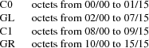
C0 and C1 are ‘‘control character’’ sets, while GL and GR are ‘‘graphic character’’ sets. Only a subset of C0 and C1 octets are used in the encoding, and depending on the character set encoding defined as GL or GR, a subset of GL and GR octets may be used; see below for details. All octets (00/00 to 15/15) may appear inside the text of extended segments (defined below).
[For those familiar with ISO 2022, we will use only an 8-bit environment, and we will always use G0 for GL and G1 for GR.]
In C0, only the following values will be used:
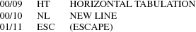
In C1, only the following value will be used:
[The alternate 7-bit CSI encoding 01/11 05/11 is not used in Compound Text.]
No control sequences are defined in Compound Text for changing the C0 and C1 sets.
A horizontal tab can be represented with the octet 00/09. Specification of tabulation width settings is not part of Compound Text and must be obtained from context (in an unspecified manner).
[Inclusion of horizontal tab is for consistency with the STRING type currently defined in the ICCCM.]
A newline (line separator/terminator) can be represented with the octet 00/10.
[Note that 00/10 is normally LINEFEED, but is being interpreted as NEWLINE. This can be thought of as using the (deprecated) NEW LINE mode, E.1.3, in ISO 6429. Use of this value instead of 08/05 (NEL, NEXT LINE) is for consistency with the STRING type currently defined in the ICCCM.]
The remaining C0 and C1 values (01/11 and 09/11) are only used in the control sequences defined below.
The default GL and GR sets in Compound Text correspond to the left and right halves of ISO 8859-1 (Latin 1). As such, any legal instance of a STRING type (as defined in the ICCCM) is also a legal instance of type COMPOUND_TEXT.
[The implied
initial state in ISO 2022 is defined with the sequence:
01/11 02/00 04/03 GO and G1 in an 8-bit environment only.
Designation also invokes.
01/11 02/00 04/07 In an 8-bit environment, C1 represented as
8-bits.
01/11 02/00 04/09 Graphic character sets can be 94 or 96.
01/11 02/00 04/11 8-bit code is used.
01/11 02/08 04/02 Designate ASCII into G0.
01/11 02/13 04/01 Designate right-hand part of ISO Latin-1
into G1.
]
To define one of the approved standard character set encodings to be the GL set, one of the following control sequences is used:
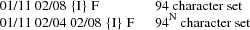
To define one of the approved standard character set encodings to be the GR set, one of the following control sequences is used:
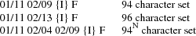
The ‘‘F’’in the control sequences above stands for ‘‘Final character’’, which is always in the range 04/00 to 07/14. The ‘‘{I}’’ stands for zero or more ‘‘intermediate characters’’, which are always in the range 02/00 to 02/15, with the first intermediate character always in the range 02/01 to 02/03. The registration authority has defined an ‘‘{I} F’’ sequence for each registered character set encoding.
[Final characters for private encodings (in the range 03/00 to 03/15) are not permitted here in Compound Text.]
For GL, octet 02/00 is always defined as SPACE, and octet 07/15 (normally DELETE) is never used. For a 94-character set defined as GR, octets 10/00 and 15/15 are never used.
[This is consistent with ISO 2022.]
A 94 N character set uses N octets (N > 1) for each character. The value of N is derived from the column value for F:
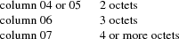
In a 94 N encoding, the octet values 02/00 and 07/15 (in GL) and 10/00 and 15/15 (in GR) are never used.
[The column definitions come from ISO 2022.]
Once a GL or GR set has been defined, all further octets in that range (except within control sequences and extended segments) are interpreted with respect to that character set encoding, until the GL or GR set is redefined. GL and GR sets can be defined independently, they do not have to be defined in pairs.
Note that when actually using a character set encoding as the GR set, you must force the most significant bit (08/00) of each octet to be a one, so that it falls in the range 10/00 to 15/15.
[Control sequences to specify character set encoding revisions (as in section 6.3.13 of ISO 2022) are not used in Compound Text. Revision indicators do not appear to provide useful information in the context of Compound Text. The most recent revision can always be assumed, since revisions are upward compatible.]
The following are the approved standard encodings to be used with Compound Text. Note that none have Intermediate characters; however, a good parser will still deal with Intermediate characters in the event that additional encodings are later added to this list.
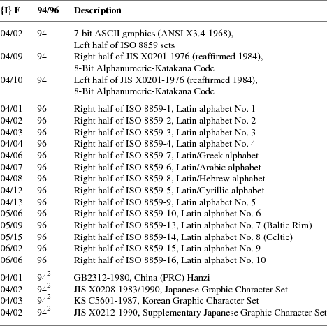
The sets listed as ‘‘Left half of ...’’ should always be defined as GL. The sets listed as ‘‘Right half of ...’’ should always be defined as GR. Other sets can be defined either as GL or GR.
Character set encodings that are not in the list of approved standard encodings can be included using ‘‘extended segments’’. An extended segment begins with one of the following sequences:
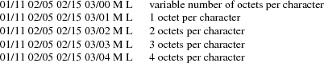
[This uses the ‘‘other coding system’’ of ISO 2022, using private Final characters.]
The ‘‘M’’ and ‘‘L’’ octets represent a 14-bit unsigned value giving the number of octets that appear in the remainder of the segment. The number is computed as ((M - 128) * 128) + (L - 128). The most significant bit M and L are always set to one. The remainder of the segment consists of two parts, the name of the character set encoding and the actual text. The name of the encoding comes first and is separated from the text by the octet 00/02 (STX, START OF TEXT). Note that the length defined by M and L includes the encoding name and separator.
[The encoding of the length is chosen to avoid having zero octets in Compound Text when possible, because embedded NUL values are problematic in many C language routines. The use of zero octets cannot be ruled out entirely however, since some octets in the actual text of the extended segment may have to be zero.]
The name of the encoding should be registered with the X Consortium to avoid conflicts and should when appropriate match the CharSet Registry and Encoding registration used in the X Logical Font Description. The name itself should be encoded using ISO 8859-1 (Latin 1), should not use question mark (03/15) or asterisk (02/10), and should use hyphen (02/13) only in accordance with the X Logical Font Description.
Extended segments are not to be used for any character set encoding that can be constructed from a GL/GR pair of approved standard encodings. For example, it is incorrect to use an extended segment for any of the ISO 8859 family of encodings.
It should be noted that the contents of an extended segment are arbitrary; for example, they may contain octets in the C0 and C1 ranges, including 00/00, and octets comprising a given character may differ in their most significant bit.
[Except for UTF-8, ISO-registered ‘‘other coding systems’’ are not used in Compound Text; extended segments are the only mechanism for non-2022 encodings.]
Unicode characters that are not contained in one of the approved standard encodings can be encoded using the UTF-8 encoding. The following escape sequences are used:
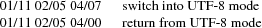
The first is the ISO registered sequence for UTF-8 (ISO-IR-196), the second is the ISO-2022 ‘‘standard return’’ sequence. While in UTF-8 mode, the UTF-8 encoding replaces the currently designated GL and GR encodings. After return from UTF-8 mode, the previously designated GL and GR encodings are reactivated.
[This is the only ‘‘other coding system’’ used in Compound Text.]
[This is an XFree86 extension introduced in XFree86 4.0.2.]
If desired, horizontal text direction can be indicated using the following control sequences:
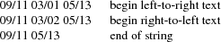
[This is a subset of the SDS (START DIRECTED STRING) control in the Draft Bidirectional Addendum to ISO 6429.]
Directionality can be nested. Logically, a stack of directions is maintained. Each of the first two control sequences pushes a new direction on the stack, and the third sequence (revert) pops a direction from the stack. The stack starts out empty at the beginning of a Compound Text string. When the stack is empty, the directionality of the text is unspecified.
Directionality applies to all subsequent text, whether in GL, GR, or an extended segment. If the desired directionality of GL, GR, or extended segments differs, then directionality control sequences must be inserted when switching between them.
Note that definition of GL and GR sets is independent of directionality; defining a new GL or GR set does not change the current directionality, and pushing or popping a directionality does not change the current GL and GR definitions.
Specification of directionality is entirely optional; text direction should be clear from context in most cases. However, it must be the case that either all characters in a Compound Text string have explicitly specified direction or that all characters have unspecified direction. That is, if directionality control sequences are used, the first such control sequence must precede the first graphic character in a Compound Text string, and graphic characters are not permitted whenever the directionality stack is empty.
To use Compound Text in a resource, you can simply treat all octets as if they were ASCII/Latin-1 and just replace all ‘‘\’’ octets (05/12) with the two octets ‘‘\\’’, all newline octets (00/10) with the two octets ‘‘\n’’, and all zero octets with the four octets ‘‘\000’’. It is up to the client making use of the resource to interpret the data as Compound Text; the policy by which this is ascertained is not constrained by the Compound Text specification.
The following CharSet names for the standard character set encodings are registered for use in font names under the X Logical Font Description:
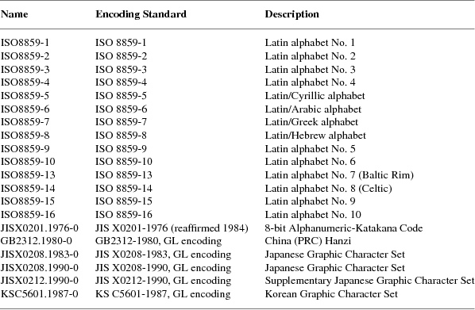
There is no absolute requirement for a parser to deal with anything but the particular encoding syntax defined in this specification. However, it is possible that Compound Text may be extended in the future, and as such it may be desirable to construct the parser to handle 2022/6429 syntax more generally.
There are two general formats covering all control sequences that are expected to appear in extensions:
01/11 {I} F
For this format, I is always in the range 02/00 to 02/15, and F is always in the range 03/00 to 07/14.
09/11 {P} {I} F
For this format, P is always in the range 03/00 to 03/15, I is always in the range 02/00 to 02/15, and F is always in the range 04/00 to 07/14.
In addition, new (singleton) control characters (in the C0 and C1 ranges) might be defined in the future.
Finally, new kinds of ‘‘segments’’ might be defined in the future using syntax similar to extended segments:
01/11 02/05 02/15 F M L
For this format, F is in the range 03/05 to 3/15. M and L are as defined in extended segments. Such a segment will always be followed by the number of octets defined by M and L. These octets can have arbitrary values and need not follow the internal structure defined for current extended segments.
If extensions to this specification are defined in the future, then any string incorporating instances of such extensions must start with one of the following control sequences:
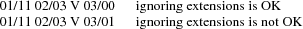
In either case, V is in the range 02/00 to 02/15 and indicates the major version minus one of the specification being used. These version control sequences are for use by clients that implement earlier versions, but have implemented a general parser. The first control sequence indicates that it is acceptable to ignore all extension control sequences; no mandatory information will be lost in the process. The second control sequence indicates that it is unacceptable to ignore any extension control sequences; mandatory information would be lost in the process. In general, it will be up to the client generating the Compound Text to decide which control sequence to use.
If a Compound Text string does not match the specification here (e.g., uses undefined control characters, or undefined control sequences, or incorrectly formatted extended segments), it is best to treat the entire string as invalid, except as indicated by a version control sequence.